Zoom
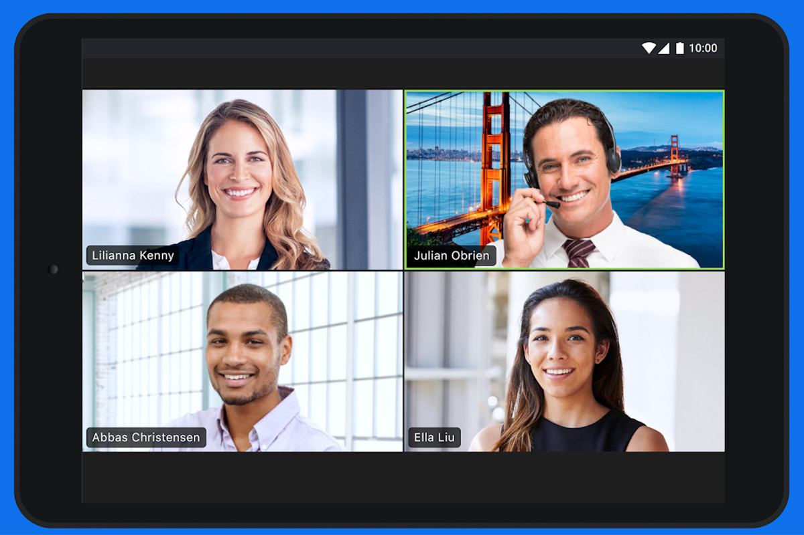Zoom es un servicio de videoconferencia basado en la nube que puede usar para reunirse virtualmente con otros, ya sea por video o solo audio o ambos, todo mientras realiza chats en vivo, y le permite grabar esas sesiones para verlas más tarde. Zoom fue creado por el ingeniero Eric Yuan en 2011 en colaboración con WebEx.
La aplicación de escritorio está disponible para Windows y macOS , mientras que la aplicación móvil está disponible para Android e iOS . Todas las aplicaciones le permiten unirse a una reunión sin iniciar sesión, pero también le permiten iniciar sesión con una cuenta de Zoom, Google, Facebook o SSO.
Características

A pesar de tener opciones de pago, nos permite organizar reuniones ilimitadas de manera personal y tener videoconferencias de hasta 40 minutos con más de 100 participantes
Permite realizar reuniones individuales
Reuniones grupales
Permite el uso compartido de pantalla
Dependiendo del plan que se contrate, Zoom te permite hacer diferentes cosas con distintos límites, dependiendo si se necesita para proyectos personales, trabajos en conjunto, grandes empresas o shows en vivo.
Ventajas
- Como herramienta de videoconferencias, cuenta con un soporte sumamente estable de conexión, lo que brinda la posibilidad de realizar videoconferencias con un gran número de personas con una calidad de video en alta definición y sin cortes.
- La versión de escritorio y de móvil cuenta con una interfaz sumamente cómoda e intuitiva de utilizar.
- Permite compartir archivos con los usuarios presentes en una conferencia de forma sencilla.
- Brinda la posibilidad de añadir hasta 1000 usuarios a una sola sesión, algo que muy pocas plataformas son capaces de permitir.
- Cuenta con una versión gratuita que no resulta tan restrictiva como se podría pensar. Permite compartir pantalla, algo sumamente útil para realizar explicaciones en tiempo real.
Desventajas
- A pesar de contar con una versión gratuita, las verdaderas funciones de la aplicación están reservadas para las versiones de pago, los cuales pueden resultar bastante costosos.
- Pese a su éxito en la actualidad, no es una plataforma tan conocida como otros medios como Skype o Google Meet.
- Se trata de una aplicación que funciona a través de internet, por lo que es necesario tener una conexión estable para tener una videoconferencia.
- A pesar de tener un modo de uso bastante intuitivo, puede resultar confuso para personas que no estén totalmente adaptadas por completo al uso de computadores o este tipo de tecnologías.
¿Cómo Usarlo?
Luego de estos pasos la plataforma te dará tu ID o el URL para tus reuniones personales, con el que podrás hacer uso de los diferentes servicios que tiene este software. Puedes invitar a otros miembros a tu sala de reuniones y a su vez modificar las configuraciones predeterminadas del sitio, para que sea más adecuado al gusto propio.
¿Cómo grabar llamadas de ZOOM como video?
Zoom le permite grabar llamadas como videos. Sin embargo, necesitas permiso para hacerlo. El anfitrión de la reunión deberá habilitar las grabaciones en la configuración. Vale la pena verificar la configuración de su cuenta para asegurarse de que la grabación esté habilitada antes de comenzar.
- 1. Inicie sesión en su cuenta de zoom
- 2. Haga clic para ver la configuración de la cuenta/reunión 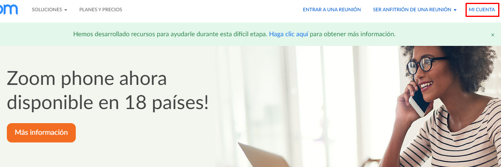
- 3. Navegue a la pestaña de grabación y haga clic para habilitar la grabación de video 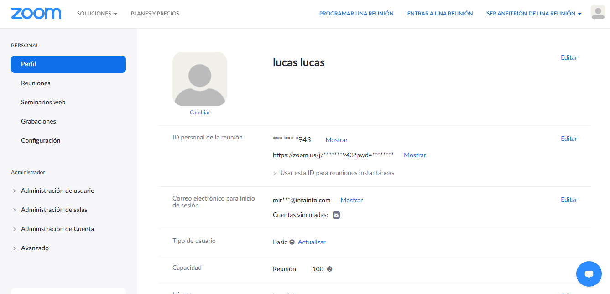 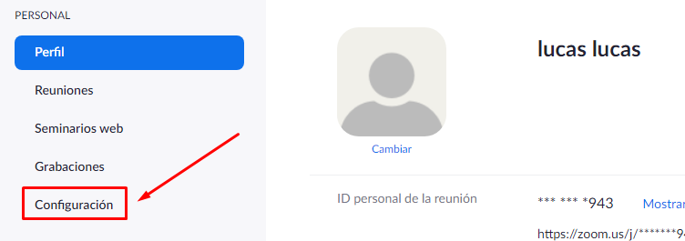 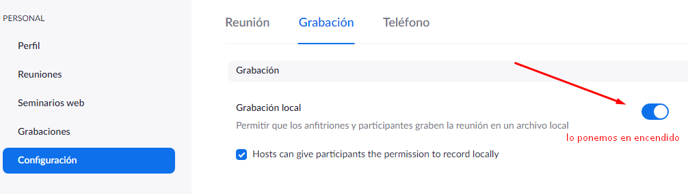
Para grabar una reunión de Zoom, debe elegir si desea usar la opción local o en la nube.
Local significa que almacena el archivo de video usted mismo en su computadora o en otra área de almacenamiento. Con Cloud, que es solo para suscriptores pagos, Zoom almacena el video para usted en su almacenamiento en la nube. Pero, para grabar videos, necesita Zoom en macOS, Windows o Linux. Cuando graba una reunión y elige Grabar en la nube, el video, el audio y el texto del chat se graban en la nube Zoom.
Cuando comienza la llamada Zoom, debería ver una opción para grabar en la parte inferior de la pantalla. Al hacer clic en eso, puede grabar localmente o en la nube.
Si no ve la opción de grabar, verifique su configuración en la aplicación web (en Configuración de mi reunión) o haga que el administrador de su cuenta lo habilite. Los archivos de grabación pueden descargarse a una computadora o transmitirse desde un navegador.
Durante la reunión, también puede ver qué participantes están grabando la reunión y a los participantes en la reunión también se les informará cuándo se está grabando la reunión. Cuando finaliza la llamada, Zoom convertirá automáticamente la grabación en un archivo de video MP4 utilizable.
En dispositivos móviles
También es posible grabar reuniones y llamadas de Zoom en dispositivos móviles. Sin embargo, esto se realiza a través de grabaciones en la nube, por lo que necesita una membresía de Zoom pagada para usar esta función. También vale la pena señalar que el almacenamiento en la nube es limitado, así que tenga cuidado con la cantidad de reuniones que graba mientras usa la aplicación móvil.
Deberá seguir los siguentes pasos:
- 1. Abre la app de zoom 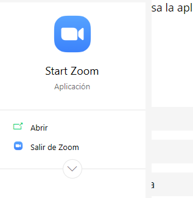
- 2. Haga clic para unirse o bien, comenzar una reunión 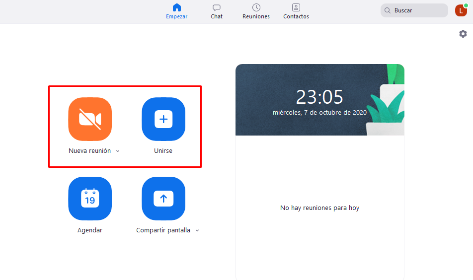
- 3. Haga clic en el menú de tres puntos en la esquina inferior derecha de la pantalla 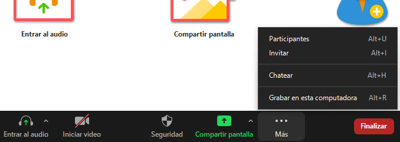
- 4. Haga clic en “grabar en la nube” o “grabar” 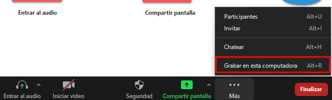
- 5. Luego verá un icono de grabación y la capacidad de pausar o detener la grabación 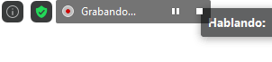
- 6. Una vez que finalice la reunión, encontrara la grabación en la sección de “mis grabaciones” del sitio de zoom 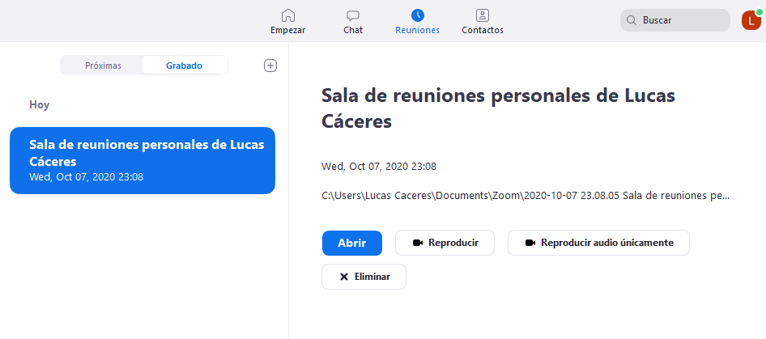
¿Dónde guarda ZOOM las grabaciones?
Cuando graba localmente, las grabaciones de llamadas de Zoom se guardan en la carpeta Zoom de su PC o Mac. Estos se pueden encontrar en estos lugares:
- • PC: C: \ usuarios \ nombre de usuario \ documentos \ zoom
- • Mac: \ usuarios \ nombre de usuario \ documentos \zoom 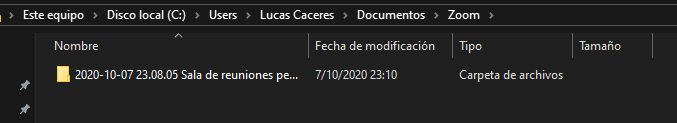
Puede acceder fácilmente a las grabaciones de Zoom abriendo la aplicación Zoom y navegando a las reuniones. Una vez allí, verá una pestaña "grabada" donde puede elegir la reunión que necesita y luego reproducir la grabación o abrirla.
Para el almacenamiento en la nube de sus grabaciones de reuniones de Zoom, inicie sesión en su cuenta y vaya a la página “Mis grabaciones.”
ZOOM ofrece las siguientes licencias
- 1. Zoom Gratis: No tiene costo, tiene un número ilimitado de reuniones pero cada reunión con múltiples participantes constan con un límite de 40 minutos, es decir, luego de haber transcurrido los 40 minutos se deberá reiniciar la reunión
- 2. Zoom pro: Este nivel cuesta 14,99 USD por mes y anfitrión de la reunión. Permite a los anfitriones crear identificadores personales de reuniones para reuniones de zoom repetitivas, y permite grabar reuniones en la nube o en el dispositivo, pero limita las duraciones de reuniones de grupo a las 24 horas.
- 3. Zoom Business: Este nivel cuesta 19,99 USD/15,99 £al mes y anfitrión de la reunión (10 mínimo). Le permite marcar reuniones de Zoom con URL de vanidad y marca de la empresa, y ofrece transcripciones de reuniones de Zoom grabadas en la nube, así como un servicio de atención al cliente dedicado.
- 4. Zoom Enterprise: este nivel cuesta $19.99/£15.99 por mes y por anfitrión de la reunión (100 mínimo) y está destinado a empresas con más de 1.000 empleados. Ofrece almacenamiento ilimitado en la nube para grabaciones, un gestor de éxito de clientes y descuentos en seminarios web y salas de zoom.
- 5. Zoom room: Si desea configurar salas de zoom, puede registrarse para una prueba gratuita de 30 días, después de lo cual las salas de zoom requieren una suscripción adicional de $49/£39 por mes y una suscripción a la sala, mientras que los seminarios web con Zoom cuestan $40/£32 por mes y host.